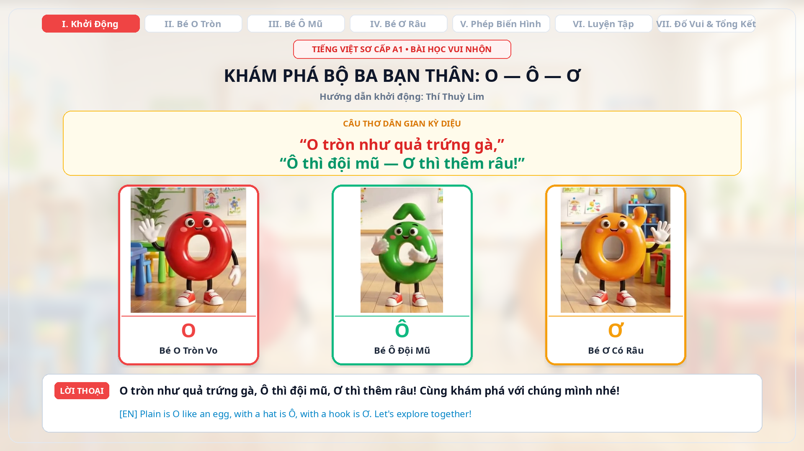
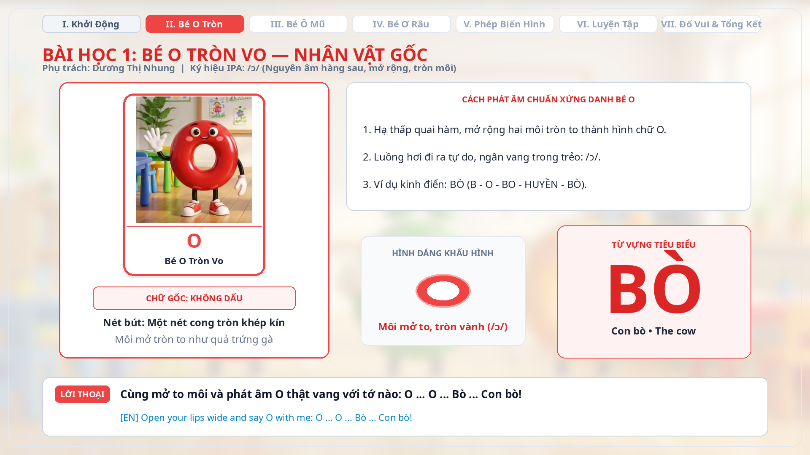
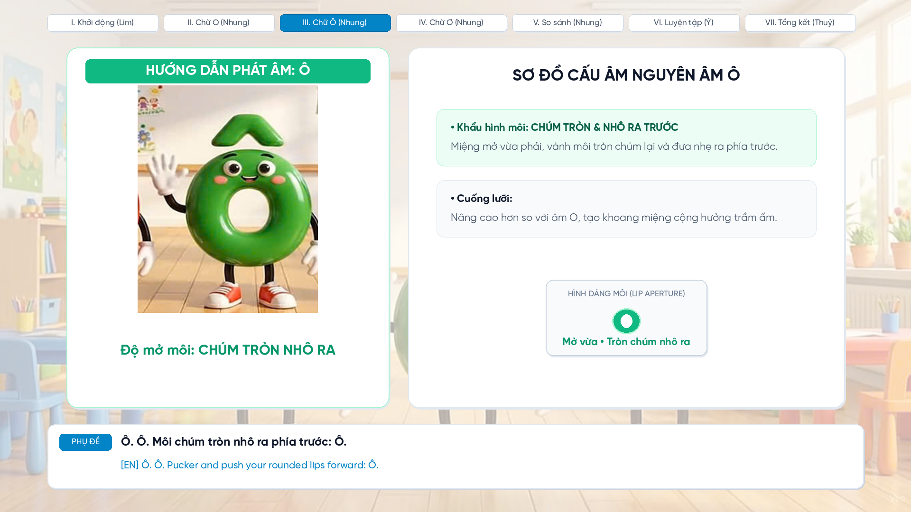
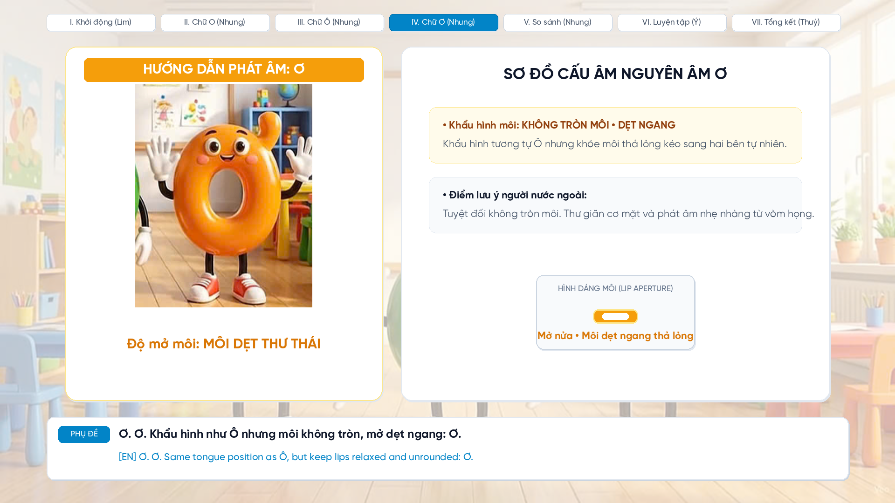
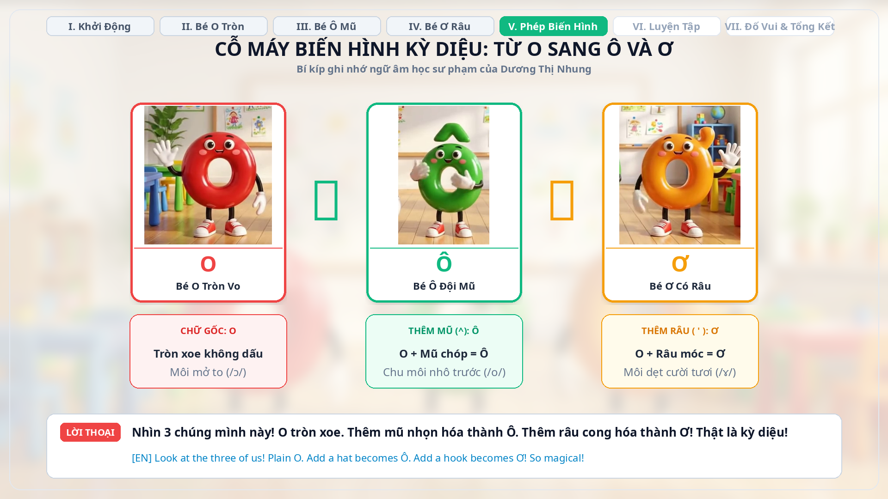
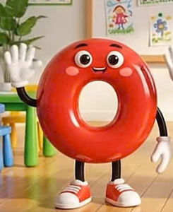
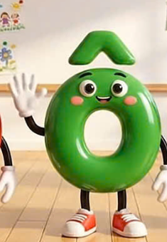

Bài giảng vi mô sinh động dành cho người học nước ngoài bắt đầu học tiếng Việt (Trình độ A1). Phân biệt hình thể mặt chữ, kỹ thuật cấu âm và phương pháp lặp lại Shadowing trực quan.
Phụ trách: Thí Thuỳ Lim • Thời lượng kịch bản: 0:00 - 0:35

Sử dụng hình tượng quen thuộc: Quả trứng gà tròn biểu trưng cho O; Chiếc mũ nón biểu trưng cho Ô; Chiếc râu móc cong biểu trưng cho Ơ.
Người học phương Tây thường nhầm mũ và râu là dấu thanh (tone marks). Video làm rõ ngay: Đây là các chữ cái nguyên âm độc lập.
Đảm bảo 100% người học nhận diện đúng mặt chữ và khẩu hình ngay trong lần học đầu tiên.
Mô hình tọa độ âm học đối chiếu vị trí cấu âm của bộ ba O — Ô — Ơ. Nhấp vào từng điểm tọa độ trên hình thang để quan sát khẩu hình và phổ tần số cộng hưởng F1/F2.
Phụ trách: Dương Thị Nhung • Thời lượng kịch bản: 0:35 - 1:25

Chữ O là một nét cong khép kín tròn đều. Về mặt ngữ âm: Là nguyên âm hàng sau, độ mở rộng nhất (Open-mid), cuống lưỡi hạ thấp, luồng hơi thoát rộng rãi tự do.

Một chiếc mũ nón rơi xuống đầu O tạo thành Ô. Về mặt ngữ âm: Độ mở môi thu hẹp hơn O (Close-mid), hai khóe môi chúm lại tròn hơn và đưa nhô về phía trước.

Chữ O mọc thêm chiếc râu móc bên phải biến thành Ơ. Về ngữ âm: Cùng vị trí lưỡi với Ô nhưng môi hoàn toàn không tròn (unrounded), mở dẹt ngang thư thái.

Phụ trách: Mạc Như Ý • Thời lượng kịch bản: 1:25 - 2:10

Con bò (Cow)
Khẩu hình: Môi mở to tròn đều

Cô giáo (Teacher)
Khẩu hình: Môi chúm tròn nhô ra
Quả bơ (Avocado)
Khẩu hình: Môi mở dẹt ngang thư thái
Phụ trách: Nông Thị Lệ Thuỷ • Thời lượng kịch bản: 2:10 - 2:45
Nhấn nút phát âm bên dưới, lắng nghe và chọn đáp án trước khi đồng hồ điểm 3 giây!
Từ "CÔ" chứa nguyên âm Ô với khẩu hình đặc trưng: hai khóe môi chúm tròn nhô ra phía trước.
Âm bạn vừa nghe có môi chúm tròn nhô ra phía trước (nguyên âm Ô), đáp án đúng phải là [A] CÔ!
Khẩu hình: Môi mở tròn rộng tối đa
Khẩu hình: Môi chúm tròn nhô ra trước
Khẩu hình: Môi mở dẹt ngang thư thái
Phim hoạt hình thiếu nhi đa bối cảnh: Từng bạn O, Ô, Ơ tỏa sáng trên sân khấu solo riêng, cỗ máy biến hình 3D, trò chơi tương tác và lễ hội đồng dao rực rỡ.
Đảm bảo đóng góp đồng đều và đúng tiêu chuẩn Rubric 100/100
Chỉ đạo dự án, kịch bản hoạt họa 3D, báo cáo AI Log & Thử nghiệm học viên A1.
Phụ trách Phần I: Khởi động, kết nối ca dao & mục tiêu bài học.
Phụ trách Phần II: Quy tắc nét chữ, hoạt cảnh chiếc mũ, chiếc râu & máy quét.
Phụ trách Phần III: Thiết kế bài tập Shadowing 2.5s (Bò - Cô - Bơ).
Phụ trách Phần IV: Tổng kết, Mini Quiz thính giác & Bảng quy tắc vàng.